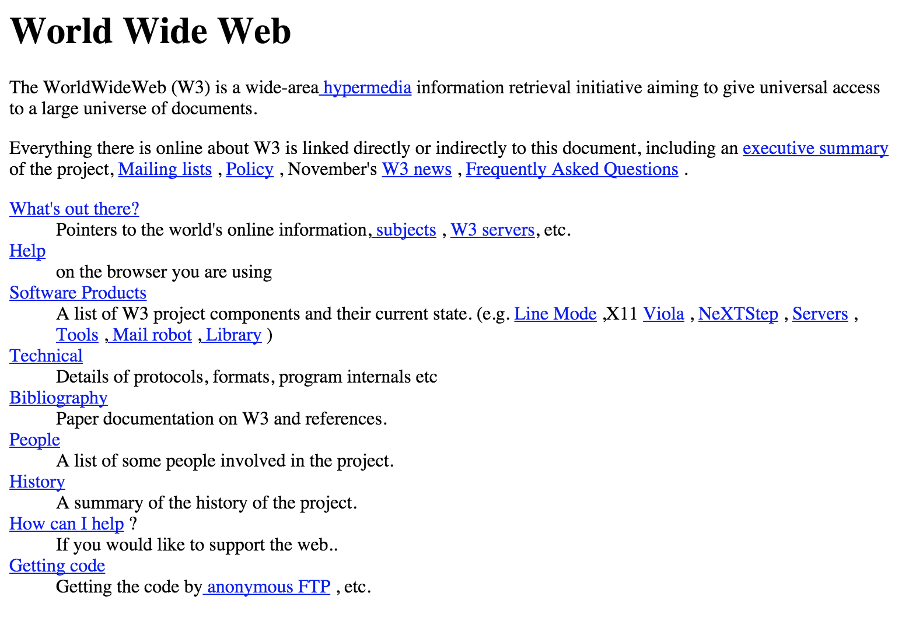
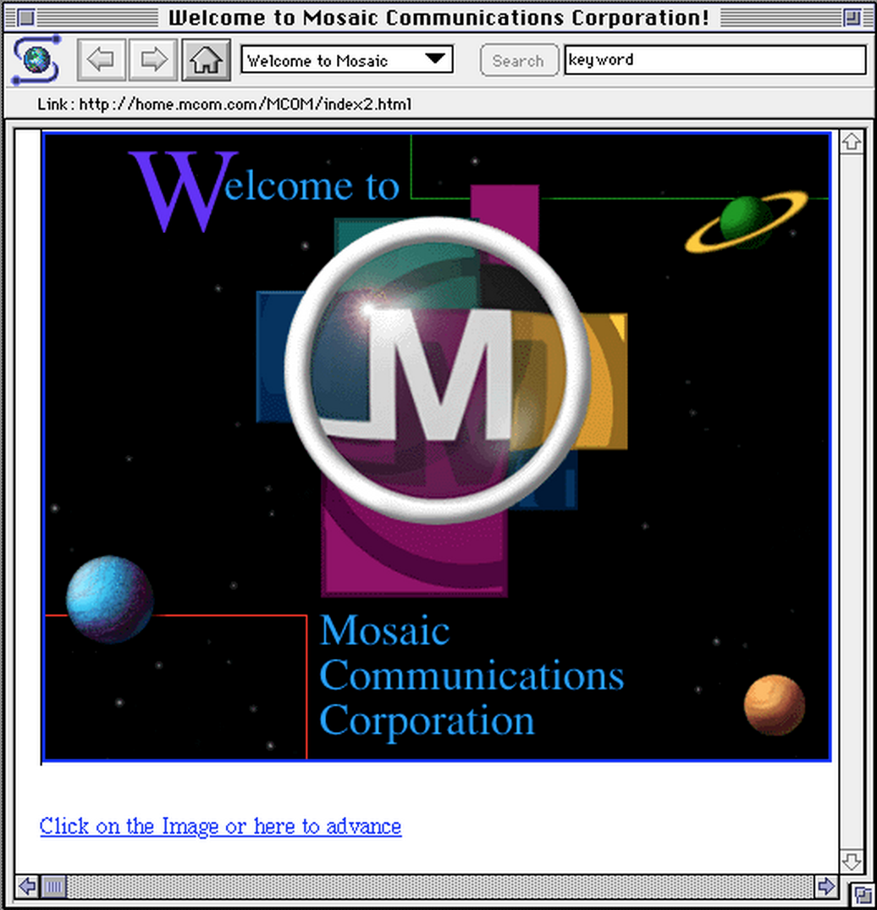

What is hypertext?
A computer system which links information through hyperlinks or reference points.
Hyperlinks connect an element (word, image, etc.) to another document providing more information about the element.
A trail of data develops as one navigates through each document, creating depth of knowledge.
Exercise
Visit the Wikipedia page for Journalism.
Find a hyperlink which interests you and click through to that topic. On the new page, find another hyperlink and move on to that page.
Repeat this five (5) times.
Write down each page you accessed.
What path did you take? Where did you end up?
Origins of the Web
- A networked hypertext system proposed by (Sir) Tim Berners-Lee and Robert Cailliau, computer scientists at CERN, in 1989
- Unveiled on USENET in 1991
- Competed with Gopher, a menu-driven hypertext alternative
info.cern.ch
1993
- Univ. of Minnesota announces licensing fees for Gopher
- Stanford Linear Accelerator Laboratory makes its database of full-text articles on physics research available on the web
- SLAC was the first American server to connect to the web
- NCSA releases Mosaic web browser
- First browser to support inline images
- Software developed for Windows, Mac
Mosaic
The Web Grows Up
- November 1992: 26 web sites
- June 1993: 130
- December 1993: 632
Today: ~1 billion sites
Tim Berners-Lee says:
Had the technology been proprietary, and in my total control, it would probably not have taken off. You can’t propose that something be a universal space and at the same time keep control of it.
Technical Lessons
- Unique identifiers
- URI: Uniform Resource Identifier
- URL: Uniform Resource Locator
- Transfer protocol
- HTTP: Hypertext Transfer Protocol
- Markup language
- HTML: Hypertext Markup Language
A new way of thinking
In its purest ideology, the web promotes:
- Decentralization
- Non-discrimination
- Open-source design
- Universality
- Consensus
- Non-linear media
Decentralization
- no central 'government' controlling the Internet (or Web)
- no single point of failure or "kill switch"
- freedom from random censorship, surveillance
Non-Discrimination
- connected users can communicate at the same level
- net neutrality
If we have time...
Last Week Tonight with John Oliver: Net Neutrality
Open-Source Design
- code is not proprietary
- the source of any page can be viewed
- encourages participation, experimentation
Universality
- so long as protocol is followed, any computer, anywhere can share
- transcends culture, politics
- ...and yet allows diversity to prosper
Consensus
- open-source design promotes universality
- web standards development is public
- W3C promotes a transparent, participatory process
Non-Linear Media
- users can acquire knowledge through the path of their choosing
- what makes the web unlike any other medium
After Mosaic
- NCSA's Marc Andreessen founds Netscape Communications in 1994
- Netscape becomes the first commercial web browser
- The Internet's 'first IPO' in 1995
- Offered at $28, soared to $75, closed at $58.25
- First-day market value: $2.9 billion
- Netscape commanded a 80-90 percent market share by 1996
The Browser Wars
- Microsoft introduces Internet Explorer in 1995
- ... for free
- To entice users, each introduced proprietary HTML tags
- This required web developers to create separate versions of sites
- duplicated effort = waste of time, money, resources
- (Did we learn anything from the development of the Internet?)
- Resulted in a campaign to standardize HTML
Web Standards
- Developed by the W3C
- Assures web sites are forward and backward compatible
- W3C Validator can identify non-standard, deprecated code
Building Web Sites
- HTML
- Current version: HTML5
- describes the structure, semantics of the content
- CSS
- Current version: CSS3
- used to present the content for different media
- predominantly used for visual design
- JavaScript (a.k.a ECMAScript)
- Current version: ECMAScript 6
- influences the behavior of the document